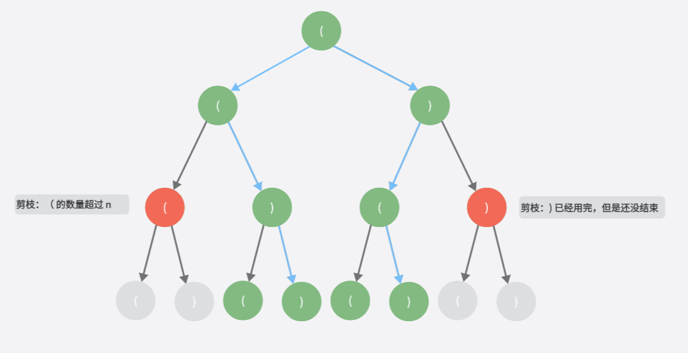

树「练习」
树的常规操作
树的遍历
先序遍历
code
使用二叉树前序遍历的方法
func generateParenthesis(n int) []string {
var path []byte
ans := make([]string, 0)
dlr(path, '(', n, &ans)
return ans
}
func dlr(path []byte, ch byte, n int, ans *[]string) {
// 访问节点
path = append(path, ch)
if len(path) == n*2 {
if isValid(path) {
*ans = append(*ans, string(path))
}
return
}
dlr(path, '(', n, ans)
dlr(path, ')', n, ans)
return
}
func isValid(pat []byte) bool {
var stack []byte
for i := 0; i < len(pat); i++ {
if len(stack) != 0 && stack[len(stack)-1] == '(' && pat[i] == ')' {
stack = stack[:len(stack)-1]
} else {
stack = append(stack, pat[i])
}
}
return len(stack) == 0
}
这样做会导致一些不必要的工作,假设当 n = 2,可以看成这样一棵二叉树

总共会走 2^(2n-1) = 8 条路径,但是只有 2 条是符合条件的
可以发现一些规律:
- 如果左括号等于 n 了,之后就只能选择右括号
- 如果目前的状态中,左括号的数量比右括号少,那么一定是不符合条件的,因为最后一定有一个左括号是没有右括号匹配的,所以如果现在的右括号等于左括号,那么下一个只能选择左括号
优化的代码:
二叉树
根据输出序列构造二叉树
105. 从前序与中序遍历序列构造二叉树
code
/**
* Definition for a binary tree node.
* type TreeNode struct {
* Val int
* Left *TreeNode
* Right *TreeNode
* }
*/
func buildTree(preorder []int, inorder []int) *TreeNode {
if len(preorder) == 0 {
return nil
}
rootIdx1 := 0
rootIdx2 := indexOf(inorder, preorder[rootIdx1])
root := &TreeNode{
Val: preorder[rootIdx1],
}
inorder1 := inorder[0:rootIdx2]
inorder2 := inorder[rootIdx2 + 1:]
preorder1 := preorder[1: 1 + len(inorder1)]
preorder2 := preorder[1+len(inorder1):]
left := buildTree(preorder1, inorder1)
right := buildTree(preorder2, inorder2)
root.Left = left
root.Right = right
return root
}
func indexOf(nums []int, tgt int) int {
for i, num := range nums {
if tgt == num {
return i
}
}
return -1
}
其他问题
101. 对称二叉树
code
/**
* Definition for a binary tree node.
* type TreeNode struct {
* Val int
* Left *TreeNode
* Right *TreeNode
* }
*/
func isSymmetric(root *TreeNode) bool {
if root == nil {
return true
}
var q []*TreeNode
q = append(q, root)
for len(q) > 0 {
var nums []int
// get head
n := len(q)
for i := 0; i < n; i++ {
if q[i] != nil {
nums = append(nums, q[i].Val)
q = append(q, q[i].Left)
q = append(q, q[i].Right)
} else {
nums = append(nums, -101)
}
}
q = q[n:]
// jud
for i, n := 0, len(nums); i < n / 2; i++ {
if nums[i] != nums[n-i-1] {
return false
}
}
}
return true
}
112. 路径总和
code
/**
* Definition for a binary tree node.
* type TreeNode struct {
* Val int
* Left *TreeNode
* Right *TreeNode
* }
*/
func hasPathSum(root *TreeNode, targetSum int) bool {
if root == nil {
return false
}
return havePathToLeaf(root, targetSum)
}
func havePathToLeaf(root *TreeNode, tgtSum int) bool {
// end
if root.Left == nil && root.Right == nil {
return root.Val == tgtSum
}
have1, have2 := false, false
if root.Left != nil {
have1 = havePathToLeaf(root.Left, tgtSum - root.Val)
}
if root.Right != nil {
have2 = havePathToLeaf(root.Right, tgtSum - root.Val)
}
return have1 || have2
}
113. 路径总和 II
code
/**
* Definition for a binary tree node.
* type TreeNode struct {
* Val int
* Left *TreeNode
* Right *TreeNode
* }
*/
func pathSum(root *TreeNode, targetSum int) [][]int {
var st []*TreeNode
var ans [][]int
if root == nil {
return ans
}
tmpRoot := root
pre := root
for len(st) > 0 || tmpRoot != nil {
for tmpRoot != nil {
st = append(st, tmpRoot)
tmpRoot = tmpRoot.Left
}
tmpRoot = st[len(st)-1]
if tmpRoot.Right == nil || tmpRoot.Right == pre {
// visit
if tmpRoot.Left == nil && tmpRoot.Right == nil {
sum := 0
var path []int
for _, node := range st {
sum += node.Val
path = append(path, node.Val)
}
if sum == targetSum {
ans = append(ans, path)
}
}
st = st[:len(st)-1]
pre = tmpRoot
tmpRoot = nil
} else {
tmpRoot = tmpRoot.Right
}
}
return ans
}
236. 二叉树的最近公共祖先
code
/**
* Definition for a binary tree node.
* type TreeNode struct {
* Val int
* Left *TreeNode
* Right *TreeNode
* }
*/
func lowestCommonAncestor(root, p, q *TreeNode) *TreeNode {
if root == nil {
return nil
}
var st []*TreeNode
var path1, path2 []int
tmpRoot := root
pre := root
for len(st) > 0 || tmpRoot != nil {
for tmpRoot != nil {
st = append(st, tmpRoot)
tmpRoot = tmpRoot.Left
}
// get
tmpRoot = st[len(st) - 1]
if tmpRoot.Right == nil || pre == tmpRoot.Right {
// visit
if tmpRoot.Val == p.Val {
for _, node := range st {
path1 = append(path1, node.Val)
}
}
if tmpRoot.Val == q.Val {
for _, node := range st {
path2 = append(path2, node.Val)
}
}
st = st[:len(st)-1]
pre = tmpRoot
tmpRoot = nil
} else {
tmpRoot = tmpRoot.Right
}
}
valIdx := map[int]int{}
idxMax := math.MinInt
for i, val := range path1 {
valIdx[val] = i
}
for _, val := range path2 {
if i, ok := valIdx[val]; ok && idxMax < i {
idxMax = i
}
}
return &TreeNode{
Val: path1[idxMax],
}
}
199. 二叉树的右视图
code
/**
* Definition for a binary tree node.
* type TreeNode struct {
* Val int
* Left *TreeNode
* Right *TreeNode
* }
*/
func rightSideView(root *TreeNode) []int {
var ans []int
if root == nil {
return ans
}
var st []*TreeNode
tmpNode := root
pre := root
for len(st) > 0 || tmpNode != nil {
for tmpNode != nil {
st = append(st, tmpNode)
if len(st) > len(ans) {
ans = append(ans, tmpNode.Val)
}
tmpNode = tmpNode.Right
}
// 判断是否该访问该节点
tmpNode = st[len(st)-1]
if tmpNode.Left == nil || tmpNode.Left == pre {
pre = tmpNode
tmpNode = nil
st = st[:len(st)-1]
} else {
tmpNode = tmpNode.Left
}
}
return ans
}
958. 二叉树的完全性检验
code
/**
* Definition for a binary tree node.
* type TreeNode struct {
* Val int
* Left *TreeNode
* Right *TreeNode
* }
*/
// bfs
// 第一层 1 2的0次方
// 第二层 2 2的1次方
// ...
// 遍历每一层的的时候，计算下一层的节点数量，如果不等于 2 的 n 次方，判断当前层的子树情况
// 设定节点的几个状态：
// 有左右节点： 3
// 有左节点： 2
// 有右节点： 9
// 没有子节点： 0
// 那么： 3 后面必须是 3、2、0
// 2 后面必须是 0
// 0 后面必须是 0
// 如果包含 9 则不完全
// 或者说： 3 前面必须是 3
// 2 前面必须是 3
// 0 前面必须是 3 或者2
func isCompleteTree(root *TreeNode) bool {
if root == nil || root.Left == nil && root.Right == nil {
return true
}
var q []*TreeNode
q = append(q, root)
nextLevelNum := 2
preState := 3 // 假设在前面补充一个状态最好的节点
//curLevelFull := true
for len(q) > 0 {
width := len(q)
childNum := 0
for i:=0; i<width; i++ {
node := q[i]
nodeState := 3
if node.Left != nil && node.Right != nil {
nodeState = 3
childNum += 2
q = append(q, node.Left)
q = append(q, node.Right)
} else if node.Left != nil {
nodeState = 2
childNum += 1
q = append(q, node.Left)
} else if node.Right != nil {
nodeState = 9
childNum += 1
q = append(q, node.Right)
} else if node.Left == nil && node.Right == nil {
nodeState = 0
}
//
if nodeState == 9 {
return false
}
if nodeState == 3 && preState != 3 {
return false
}
if nodeState == 2 && preState != 3 {
return false
}
if nodeState == 0 && preState == 3 || preState == 2{
//
}
preState = nodeState
}
//if childNum != nextLevelNum && !curLevelFull {
// return false
//}
//if childNum != nextLevelNum {
// curLevelFull = false
//}
nextLevelNum *= 2
q = q[width:]
}
return true
}
572. 另一棵树的子树
code
/**
* Definition for a binary tree node.
* type TreeNode struct {
* Val int
* Left *TreeNode
* Right *TreeNode
* }
*/
// 通过树的先序遍历
// 补充树的每个节点，让度为2，输出树的先序遍历
// 判断主树的序列包含子树的序列
func isSubtree(root *TreeNode, subRoot *TreeNode) bool {
nums1 := dlrNums(root)
nums2 := dlrNums(subRoot)
return kmpSearch(nums1, nums2)
}
const lrNilVal = -10001
var leftNilNode = TreeNode{
Val: lrNilVal,
}
var rightNilNode = TreeNode{
Val: lrNilVal,
}
func dlrNums(root *TreeNode) []int {
var nums []int
if root == nil {
return nums
}
var st []*TreeNode
st = append(st, root)
tmpRoot := root
for len(st) > 0 {
// pop
tmpRoot = st[len(st) - 1]
st = st[:len(st) - 1]
// visit
nums = append(nums, tmpRoot.Val)
if tmpRoot.Val != lrNilVal && tmpRoot.Left == nil {
tmpRoot.Left = &leftNilNode
}
if tmpRoot.Val != lrNilVal && tmpRoot.Right == nil {
tmpRoot.Right = &rightNilNode
}
if tmpRoot.Right != nil {
st = append(st, tmpRoot.Right)
}
if tmpRoot.Left != nil {
st = append(st, tmpRoot.Left)
}
}
return nums
}
// i
// nums a a b a a b a a c
// pat
// j
func kmpSearch(nums, pat []int) bool {
next := getNext(pat)
j := 0
for i := 0; j < len(pat) && i < len(nums); i++ {
for ; j > 0 && nums[i] != pat[j]; j = next[j-1]{}
if nums[i] == pat[j] {
j++
}
}
return j == len(pat)
}
func getNext(pat []int) []int {
next := make([]int, len(pat))
next[0] = 0
for l, j := 0, 1 ; j < len(pat); j++ {
for l > 0 && pat[l] != pat[j] {l = next[l-1]}
if pat[l] == pat[j] {
l++
}
next[j] = l
}
return next
}
116. 填充每个节点的下一个右侧节点指针
code
/**
* Definition for a Node.
* type Node struct {
* Val int
* Left *Node
* Right *Node
* Next *Node
* }
*/
func connect(root *Node) *Node {
if root == nil {
return root
}
// 最下面一层，直接返回
if root.Left == nil && root.Right == nil {
return root
}
root.Left.Next = root.Right
if root.Next != nil {
root.Right.Next = root.Next.Left
}
connect(root.Left)
connect(root.Right)
return root
}
二叉搜索树
98. 验证二叉搜索树
code
/**
* Definition for a binary tree node.
* type TreeNode struct {
* Val int
* Left *TreeNode
* Right *TreeNode
* }
*/
// 递归实现
// 从二叉搜索树当前节点的值可以推出左右节点的取值区间，递归判断每个节点即可
func isValidBST(root *TreeNode) bool {
if root == nil {
return true
}
return jud(root, math.MinInt, math.MaxInt)
}
func jud(root *TreeNode, start, end int) bool {
if root == nil {
return true
}
if root.Val <= start || root.Val >= end {
return false
}
return jud(root.Left, start, root.Val) && jud(root.Right, root.Val, end)
}